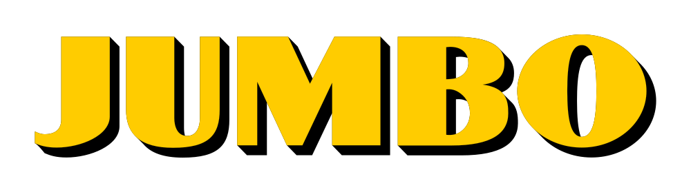

-
Planning and Staff Management Employee at Van Neynsel
July 2023 - now
- Helping employees with their schedule questions and preparing schedules
- Contacting employees about their important documents like contracts and certificates of conduct
- Managing references for the company
-

Orderpicker at Jumbo
January 2023 - August 2023
- Picking orders for online orders
- Unpacking cargo from suppliers
- Filling the warehouse with new products for the orderpickers
-
Creative Business, Breda University of Applied Sciences
2022 – now
- Hands-on production, concept development, marketing and management
- Exchange with Bournemouth University
- Pre-Master Strategic Business Management & Marketing
-

Rodenborch College, Rosmalen
2017-2022
- Economy & Society Diploma
- Graduated Cum Laude